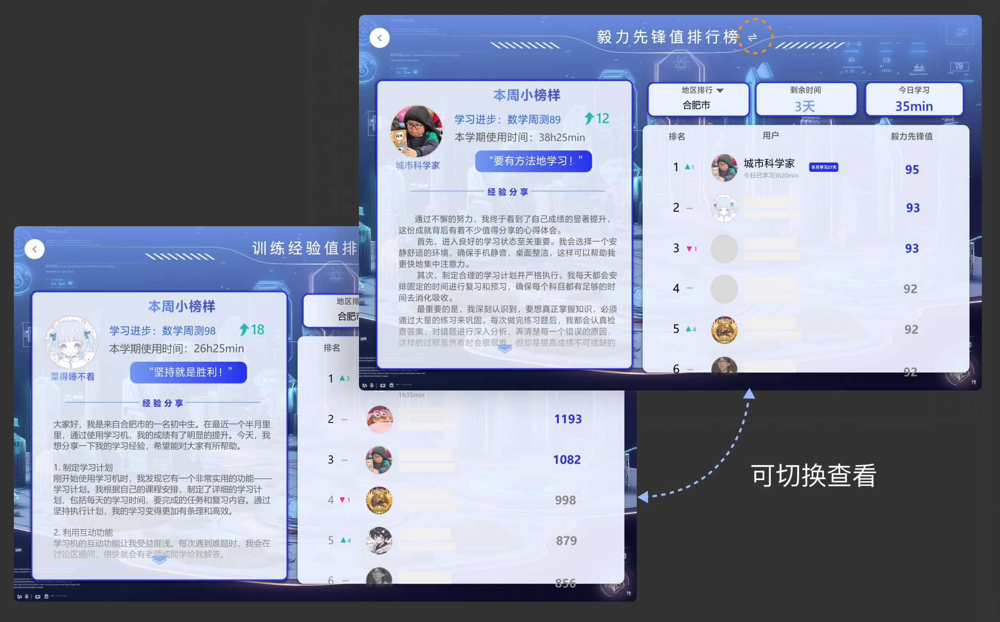
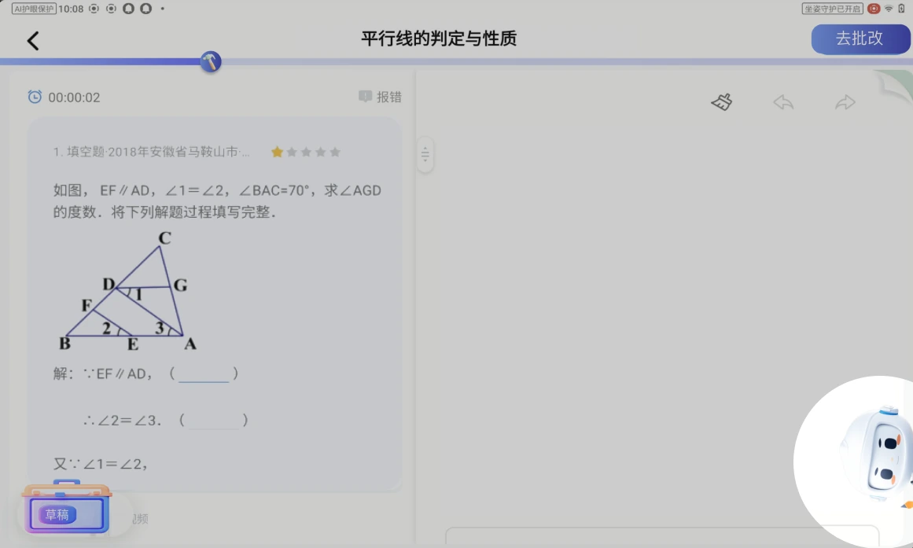
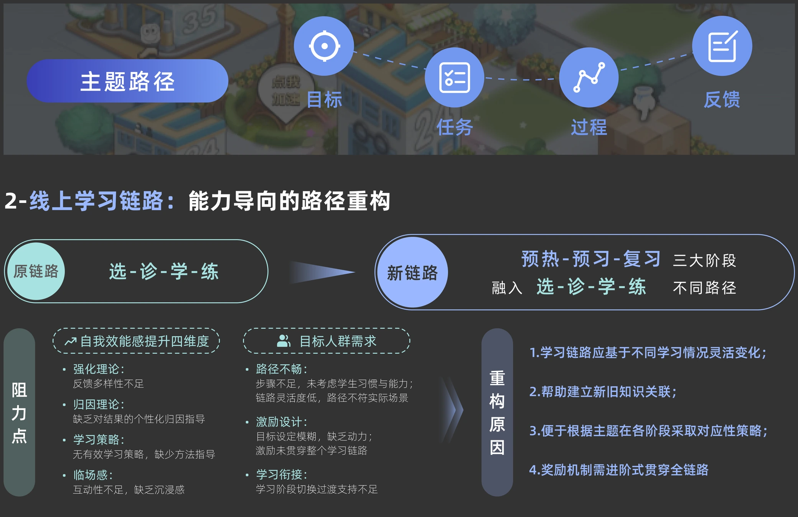
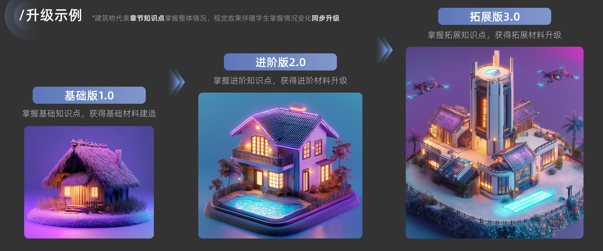
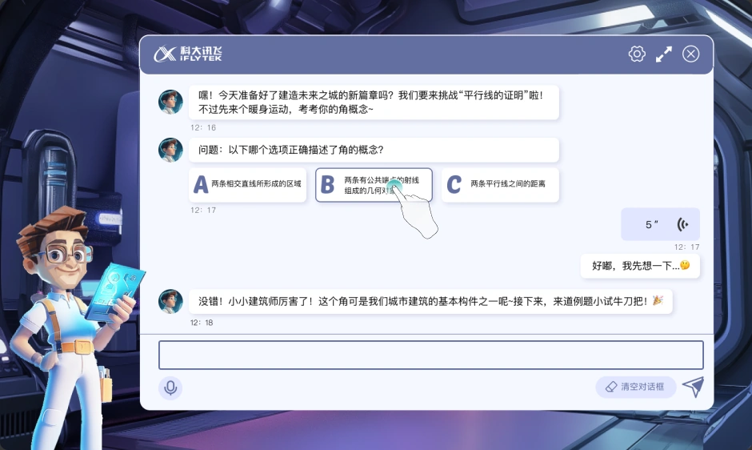
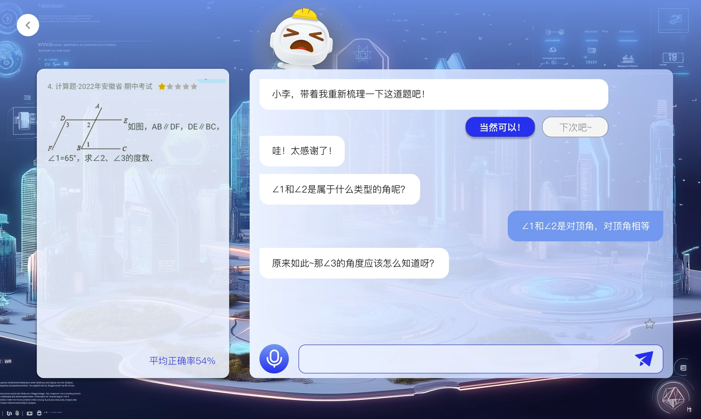

科大訊飛 · 學習產品
把學習動機做進產品體驗
將學生的學習動機與使用阻力轉化為成長回饋和遊戲化激勵。
專案交付 50+ 個介面與高擬真原型。

科大訊飛 AI 精準學 · 伴學互動
做題卡住時，學生怎樣向小飛求助？

遺忘知識點了嗎？
學生卡在哪裡？
題目已給出 EF ∥ AD，學生卻說不出兩個角為什麼相等。點題目右邊的小飛，就能從這一步求助。
讓學生自己說出疑問
原稿把主動求助做成一個圓角對話框。題目留在背景，學生可以把問題說得比「我不會」更具體。
給一條線索，留一步給學生
小飛把注意力引回題目給出的平行線。學生可以回去推導，也可以針對同一步追問。
把提示縮小到圖上的兩個位置
第二個提示指出 E 和 A，請學生比較角的位置。何時結束對話，交給學生決定。
接著剛才的推導往下做
對話收起後，仍是原來的幾何題。學生可以沿 BA 對照兩個角，補上等式的理由。
設計取捨
原方案只有部分題目提供固定提示。伴學入口讓學生在需要時主動提問；原稿也另外設計了偵測到長時間停滯時的邀請，學生可選擇繼續思考。
如何走查
給學生同一道題，觀察他能否自己找到求助入口、問出卡住的那一步，並在關閉對話後接著推導。三個動作可分開記錄。
設計思路
學生做完一個任務後，怎樣看懂自己取得的進展，並知道下一步做甚麼？
- 整理動機和阻力回看訪談與競品學習路徑
- 明確回饋節點用目標、任務、過程和回饋組織體驗
- 做成可討論的原型把成長主題與學習回饋落到具體介面
從訪談收斂學習問題
作為校企合作項目的核心成員，我參與 20+ 場使用者訪談和 15+ 個競品流程拆解。梳理持續學習的動機與阻力後，我把案例聚焦到任務過程中的回饋：學生能否理解自己的進展，以及完成後還有沒有明確的下一步。
找到學生想學與學不下去的原因
團隊結合訪談、文獻與競品拆解。動力調研先看 7 個遊戲化產品，再深入 3 個；阻力分析則把原產品與 5 個核心競品放到「選、診、學、練」流程中，並歸類 20 多場訪談的重點。


把研究發現落到學習路徑
| 調研發現 | 設計推導 | 畫面落點 |
|---|---|---|
| 學習入口少、層級多，原有「選、診、學、練」路徑較不靈活。 | 依預熱、預習、複習安排情境，在各階段融入適合的診斷、學習或練習。 | 用新的學習流程圖檢視任務與階段切換。 |
| 學習引導不足，激勵方式單一，學生需要更清楚的目標與過程回饋。 | 共創把主題路徑拆成目標、任務、過程、回饋四個節點。 | 用成長進度呈現累積成果，伴學角色與獎勵放在學習過程中。 |
把回饋放進學習路徑
我主導跨職能工作坊，把研究發現放到「目標、任務、過程、回饋」四個節點討論。成長主題用來呈現累積進度，獎勵和數字陪伴對應任務過程中的回饋。
- 介面需要回答甚麼
- 學生看完回饋後，應能說出自己已經完成甚麼、當前處於哪個階段，以及接下來能做甚麼。



原型交付
我參與交付了 50 多個介面及高保真原型。這六張原稿沿著學生的任務排列，從辨認概念、閱讀課本，到把自己的思路講給別人聽。




